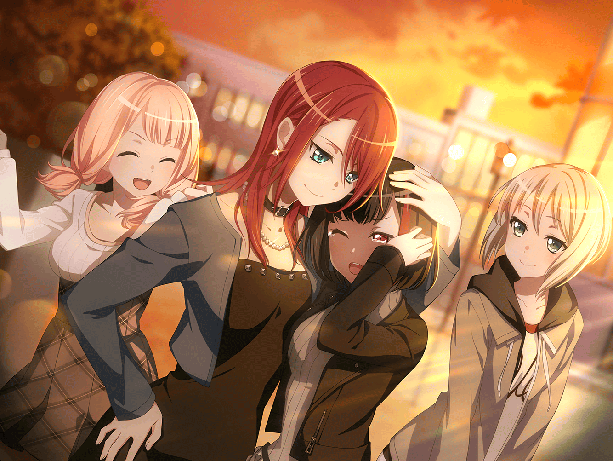

美竹家 玄関前
つぐみ
蘭ちゃん、どうなったかなあ……
ひまり
蘭が話し合いにいってからどれくらい経ったかなあ……？
もしかして、うまくいってないのかなあ？
モカ
話し合いがうまくいったのがうれしくて泣いてるんだよ～。
目の腫れがひいてから出てくるんじゃない～？
ひまり
またモカはすぐそういうこと言うんだから……
巴
あっ、蘭！
蘭
……
ひまり
……蘭？
つぐみ
どうだった……？
蘭
……父さん、ガルジャム見に来てくれるって。
ライブで納得させる
ひまり
じゃあ……！
蘭
ほら、早くスタジオ行こう。
納得させる演奏をしてみせるんだから
蘭以外
……
巴
……ったく、蘭のヤツ……素直じゃないなあ
つぐみ
蘭ちゃん、バンド、続けられるってことだよね……？
ひまり
うんうんっ、そういうことだよねっ！
やっっったぁ～～～！！！！ よかったぁ～～！！
もう、ほんっと心配してたんだからねー！？
モカ
……蘭～、目赤いよ？
もしかして、さっきまで安心して泣いてた～？
蘭
……っ！ 泣いてない
モカ
またまた～。モカちゃんの目はごまかせないぞ～？
蘭
……泣いて、ない……っ！
巴
蘭……
ひまり
あ～、モカが泣かせた～！
モカ
あたしじゃないよぉ～
蘭
……っ、ぐすっ、モカの……バカ……っ！
モカ
ええ～、あたし、バカなの～？

巴
……蘭。よく言ったな
蘭
……うんっ。うん……！
……あたしだって……不安だったんだから……！
ひまり
蘭とまた、バンドができてうれしいよ。
やっぱり、Afterglowはこの５人じゃないとね！
つぐみ
うんうんっ！
蘭
みんな……その……
蘭
……いつも助けてくれて、ありがと
ひまり
……蘭……！ ううん、こちらこそ、だよ！
蘭の歌があるからバンドが成り立つんだよっ。
よーっし、それじゃあスタジオいこっか！
つぐみ
うんっ！
……わあ、見て。すごいキレイな夕焼けだよ！
モカ
お～、ホントだ。まぶしいねえ。
まるであたし達の青春みたいだね～
巴
何言ってんだよ
ひまり
みんな、この夕日に誓おう！
ライブ、ぜ～～～ったい成功させよう！
ひまり
えい、えい、おー！
ひまり以外
……
ひまり
えぇ～！？ やっぱり誰も言わないの～！？
蘭
……おー
モカ
蘭、だいじょぶ？
蘭
べ、別に……！
モカ
そんな顔真っ赤にするくらいなら、やらなきゃいいのに～
蘭
うるさい
つぐみ
あははっ。……でも、本当によかった。
これでやっと、『いつも通り』に戻れるね
巴
ああ。あとは、ガルジャムに向けて突っ走るだけだ。
蘭のために……いや、アタシ達のために、最高の演奏をしよう
つぐみ
……うん！

スタジオ
ひまり
ね、ねえ……そろそろ休憩しない？
ひ、久しぶりの練習だから疲れちゃったよぉ……
巴
確かに、ぶっ続けだったな。少し、休憩しよう
ひまり
や、やったー……

スタジオ ロビー
モカ
らーん
蘭
モカ。どうしたの？
モカ
んー？
もうパパから電話かかってこないから
寂しいんじゃないかと思ってさ～
蘭
……ハア。あのねえ……
モカ
蘭
モカ
またみんなで夕焼け見られてよかったね
蘭
……うん
モカ
蘭。
戻ってきてくれて、ありがとー。おかえり
蘭
……ただいま、モカ